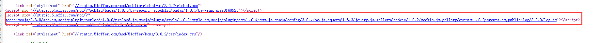

浅谈网站性能之前端性能优化
演讲者：pybyongbo
Date:2017-03-31
Date:2017-03-31
基本原理：在浏览器与服务器进行通信时，主要是通过 HTTP 进行通信。浏览器与服务器需要经过三次握手，每次握手需要花费大量时间。而且不同浏览器对资源文件并发请求数量有限（不同浏览器允许并发数），一旦 HTTP 请求数量达到一定数量，资源请求就存在等待状态，这是很致命的，因此减少 HTTP 的请求数量可以很大程度上对网站性能进行优化。
| 序 号 | 常用方法 |
|---|---|
| 1 | CSS Sprites：国内俗称 CSS 精灵，这是将多张图片合并成一张图片达到减少 HTTP 请求的一种解决方案，可以通过 CSS background 属性来访问图片内容。这种方案同时还可以减少图片总字节数，节省命名词汇量（由命名多张图片文件变成一张，哈哈哈）。 |
| 2 | 合并 CSS 和 JS 文件：现在前端有很多工程化打包工具，如：grunt、gulp、webpack等。为了减少 HTTP 请求数量，可以通过这些工具再发布前将多个 CSS 或者 多个 JS 合并成一个文件。 |
| 3 | 采用 lazyLoad：俗称懒加载，可以控制网页上的内容在一开始无需加载，不需要发请求，等到用户操作真正需要的时候立即加载出内容。这样就控制了网页资源一次性请求数量。 |
基本原理：说到这里就需要知道浏览器加载 HTML 内容的原理，浏览器在加载 HTML 内容时，是将 HTML 内容从上至下依次解析，解析到 link 或者 script 标签就会加载 href 或者 src 对应链接内容，为了第一时间展示页面给用户，就需要将 CSS 提前加载，不要受 JS 加载影响。
| 序 号 | 遵循原则: |
|---|---|
| 1 | 主要文件放在 head 内部，次要文件放在 body 底部。一般情况下都是 CSS 在头部，JS 在底部。 |
| 2 | 按需加载,点击的时候加载对应的数据:(默认不请求,tab选项卡类型的切换); |
| 3 | 列表页面图较多的时候采用懒加载,一张对应较小的图片做背景图片,视窗滚动到对应的位置在替换。(大型网站如淘宝,京东都有的) |
(3)利用浏览器缓存
基本原理：浏览器缓存分强缓存和协商缓存，他们是将网络资源存储在本地，等待下次请求该资源时，如果命中就不需要到服务器重新请求该资源，直接在本地读取该资源。强缓存：在 web 服务器返回的响应中添加 Expires 和 Cache-Control Header。
我们查看控制台中network,status为304表示请求的是缓存文件,在开发环境下,我们要强制刷新页面,清理缓存!
(4)减少重排（Reflow）
基本原理：重排是 DOM 的变化影响到了元素的几何属性（宽和高），浏览器会重新计算元素的几何属性，会使渲染树中受到影响的部分失效，浏览器会验证 DOM 树上的所有其它结点的 visibility 属性，这也是 Reflow 低效的原因。如果 Reflow 的过于频繁，CPU 使用率就会急剧上升。
减少 Reflow，如果需要在 DOM 操作时添加样式，尽量使用 增加 class 属性，而不是通过 style 操作样式。
(5)减少 DOM 操作
(6)图标使用 IconFont 替换
(7)AjAx方法增加before方法
数据渲染之前,显示loading动画。防止没加载钱出现大片空白。增强页面用户体验!
(8)优化图片(合并小图片和优化图片格式,HTML中设置宽高)
(9)代码优化(页面代码结构进行优化,删除重复脚本)
(10)避免重定向
3xx的响应状态码代表着一股重定向的响应。其中URL结尾缺少斜线造成的重定向需要特别注意，不要因为这一点失误损伤性能。
(11)后端SQL语句优化,接口优化(Redis缓存等)
以后在开发过程中,我们可以从以上面方面对自己的页面进行优化,代码是写给人看的,只是让机器偶尔执行一下,所以不要写些人都看不懂的代码!
谢谢观看 ~~ END